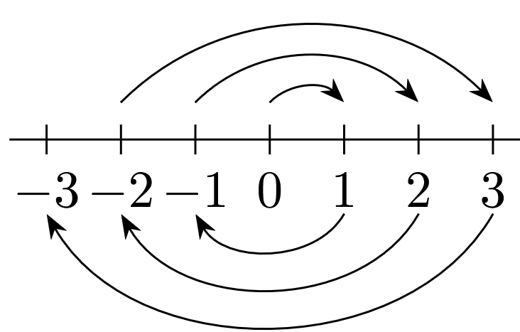
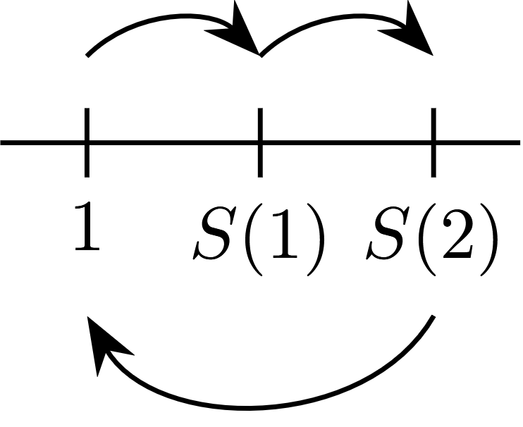
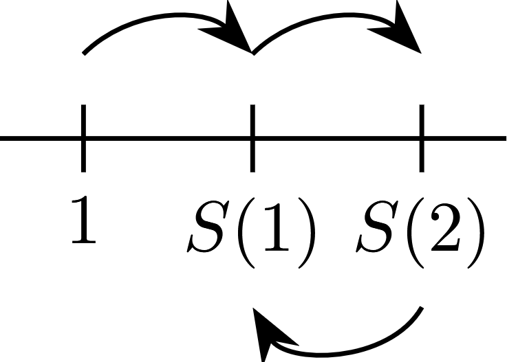
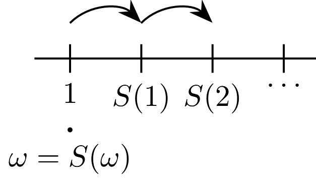

2 The Natural Numbers
In this chapter natural numbers will by synonym of the positive integers, \(\mathbb{P}\). That is, \(1, 2, 3, \ldots\), where are one of the most familiar mathematical objects.
The objective of this chapter is to develop an axiomatic theory of the natural numbers following (Mendelson 2015, chap. 2).
2.1 Peano systems
Definition 2.1 A Peano system is a triple \((\mathbb{P}, 1, S)\) where \(\mathbb{P}\) is a non empty set where \(1 \in \mathbb{P}\) and \(S\) is a singulary operation on \(\mathbb{P}\), \(S: \mathbb{P} \longrightarrow \mathbb{P}\), such that the following axioms are satisfied:
\(1\) is not the successor \(S(x)\) of any object \(x \in \mathbb{P}\). In symbols, \(\forall x(S(x) \neq 1)\) or \(1 \not \in \mathscr{R}(S)\).
Different objects in \(\mathbb{P}\) have different successors. This can be formulated as follows:
\[ \forall x \forall y (x \neq y \Longrightarrow S(x) \neq (S(y))) \]
Principle of Mathematical Induction: Any subset of \(\mathbb{P}\) containing \(1\) and closed under the successor operation (See Exercise 1.54 1. and applied for a singulary operation) must be identical to \(\mathbb{P}\). This can be formulated as follows:
\[\forall B ((B \subseteq \mathbb{P} \land 1 \in B \land \forall x(x \in B \Longrightarrow S(x) \in B)) \Longrightarrow \mathbb{P} = B)\]
Note: In the triple \((\mathbb{P}, 1, S)\) the set \(\mathbb{P}\) is called the underlying set, \(S\) the successor operation, and \(1\) the distinguished element. The distinguished element \(1\) need not have anything to do with the ordinary integer \(1\).
Example 2.1
Let \(\mathbb{P}\) be the set of natural numbers. \(1\) is to denote the ordinary integer \(1\). \(S\) is the operation of adding \(1\): \(S(x) = x + 1\) for all \(x \in \mathbb{P}\). This example will be called the standard Peano system.
If \(x \in \mathbb{P}\) then \(x + 1 \neq 1\). Also if \(x \neq y\) then \(x + 1 \neq y + 1\). Furthermore, let \(B \subseteq \mathbb{P}\), \(1 \in B\) and if \(x \in B\) then \(x + 1 \in B\). Therefore \(B = \mathbb{P}\).
Let \(\mathbb{P}\) be the set of all integers greater than or equal to \(1000\). \(1\) is to denote the integer \(1000\). \(S\) is the operation of adding the ordinary integer \(1\). Thus \(S(1000) = 1001\), \(S(1001) = 1002\) and so on.
Let \(\mathbb{P}\) be the set of negative integers. \(1\) is to denote the integer \(-1\) and \(S\) is the operation of subtracting \(1\). Thus \(S(-1) = -2\), \(S(-2) = -3\) and so on.
Let \(\mathbb{P}\) be the set of even positive integers. Let \(1\) denote the integer \(2\). \(S\) is to be the operation of adding \(2\). Thus, \(S(2) = 4\), \(S(4)\) and so on.
Theorem 2.1 Every element different from \(1\) is a successor. This can be formulated as:
\[\forall x (x = 1 \lor \exists y (x = S(y)))\]
Proof. Let \(B = \{ x \in \mathbb{P}: x = 1 \lor \exists y (x = S(y)) \}\). Then we must show that \(B = \mathbb{P}\).
We have that \(1 \in B\). Now assume \(x \in B\) then \(x \in \mathbb{P}\). Because \(S: \mathbb{P} \longrightarrow \mathbb{P}\) then \(S(x) \in \mathbb{P}\) where \(S(x) \neq 1\). So if \(x = y\) it exists some \(y\) such that \(S(x) = S(y)\). Therefore \(S(x) \in B\) which means that \(B = \mathbb{P}\) by Definition 2.1 iii.
Theorem 2.2 No object is its own successor, that is, \(\forall x (S(x) \neq x)\).
Proof. Let \(B = \{ x \in \mathbb{P}: S(x) \neq x \}\). Then we must show that \(B = \mathbb{P}\).
We have that \(1 \in B\) because \(S(1) \neq 1\) by Definition 2.1 i. Also let \(x \in B\) so \(x \in \mathbb{P}\) and \(S(x) \neq x\). Furthermore \(S(x) \in \mathbb{P}\) because \(S: \mathbb{P} \longrightarrow \mathbb{P}\). By Definition 2.1 ii \(S(S(x)) \neq S(x)\) so \(S(x) \in B\). Finally by Definition 2.1 iii \(B = \mathbb{P}\).
Exercise 2.1
Prove that every object different from \(1\) is the successor for a unique object, that is,
\[\forall x (x = 1 \lor \exists !y (x = S(y)))\]
Prove \(\forall x (x = 1 \lor x = S(1) \lor \exists y (x = S(S(y))))\)
Determine whether or not the following structures \((\mathbb{P}, S, 1)\) are Peano Systems:
\(\mathbb{P}\) is a set of all integers greater than \(9\). \(1\) stands for the integer \(10\). \(S(u) = u + 1\) for any \(u \in P\), that is \(S\) is the operation of adding the ordinary integer \(1\).
\(\mathbb{P}\) is a set of all integers. \(1\) stands for the ordinary integer \(1\). \(S(u) = u + 1\) for any \(u \in P\).
\(\mathbb{P}\) is the set of all integers. \(1\) stands for the ordinary integer \(0\) and \(S(u)\) is defined us:
\[S(u) = \begin{cases} 1 & \text{if} u = 0 \\ -u & \text{if} u > 0 \\ -(u-1) & \text{if} u < 0 \end{cases}\]

Figure 2.1: \(S(u)\) for \(\mathbb{Z}\) \(\mathbb{P}\) is the set of rational numbers of the form \(\frac{1}{2^n}\) where \(n\) is a non negative integer. \(1\) stands for the integer \(1\). Also \(S(u) = \frac{1}{2}u\) for all \(u \in \mathbb{P}\).
\(\mathbb{P} = \{ 1, 2, 3, 4 \}\). \(1\) stands for the integer \(1\). Also \(S(1) = 2\), \(S(2) = 3\), \(S(3) = 4\) and \(S(4) = 1\).
\(\mathbb{P} = \{ 1, 2, 3, \ldots \} \cup \{ 1\#, 2\#, 3\#, \ldots \}\) where \(1\#\), \(2\#\), \(3\#\), \(\ldots\) are pairwase distinct new objects different from the natural numbers. Let \(1\) denote the integer 1. Let \(S(n) = n + 1\) for any positive integer \(n\) and let \(S(n\#) = (n + 1)\#\) for any positive integer \(n\). Thus, \(S(1) = 2\), \(S(2) = 3\), \(\ldots\), and \(S(1\#) = 2\#\), \(S(2\#) = 3\#\), \(\ldots\)
Solution 2.1.
By Theorem 2.2 we have that:
\[\forall x (x = 1 \lor \exists y (x = S(y)))\] Now assume that \(x = S(y)\) and \(x = S(w)\) so \(S(y) = S(w)\). By Definition 2.1 ii \(y = w\). Therefore:
\[\forall x (x = 1 \lor \exists !y (x = S(y)))\]
We have that \(1 \in B\). Now assume \(y \in B\) then \(y \in \mathbb{P}\). Because \(S: \mathbb{P} \longrightarrow \mathbb{P}\) then \(S(y) \in \mathbb{P}\) where \(S(y) \neq 1\). Furthermore by Definition 2.1 ii \(S(S(y)) \neq S(1)\).
If \(y = 1\) then \(S(1) \neq 1\) and by Theorem 2.1 \(x = S(1)\).
Also if \(S(S(y))\) and \(y \neq 1\) by Theorem 2.1 \(\exists y (x = S(S(y)))\). Therefore:
\[\forall x (x = 1 \lor x = S(1) \lor \exists y (x = S(S(y))))\]
In each \((\mathbb{P}, S, 1)\) we have the following results
Because \(\mathbb{P} = \{ u : u > 9 \land u \text{ is an integer} \}\).
First \(S(u) = u + 1\) where \(u \in \mathbb{P}\) then \(S(u) \neq 10\). Because if \(u + 1 = 10\) then \(u = 9\) but \(9 \not \in \mathbb{P}\).
Also let \(S(u) = S(v)\) so \(u + 1 = v + 1\) which means that \(u = v\).
Finally let \(10 \in B \subseteq \mathbb{P}\) and if \(u \in B\) then \(u + 1 \in B\).
Let \(v \in \mathbb{P}\) so we need to prove that \(v \in B\). Define \(A = \{ x \in \mathbb{P} \mid 10 \leq x \leq v \}\) and let \(B \cap A\)
First, we have that \(B \cap A \subseteq A\) so by Theorem D.6 b \(B \cap A\) must be finite. Furthermore \(B \cap A \neq \emptyset\) because \(10 \in B\) and \(10 \in A\).
Second, because \(B \cap A\) is finite, \(B \cap A \subseteq \mathbb{P}\) and \(B \cap A \neq \emptyset\) it must have a greatest element \(k\) by Exercise D.5 6.
If \(k = v\) then \(v \in B\)
If \(k < v\) and because \(k \in B \cap A\) then \(k \in B\). Because of the properties of \(B\) then \(k + 1 \in B\). Also this means that \(10 \leq k + 1 \leq v\) so \(k + 1 \in A\) but this will mean that \(k + 1 \in B \cap A\). However \(k + 1 > k\) so \(k\) will not be the greatest element. Because we arrive to a contradiction we discard that \(k < v\).
The proof is similar to Solution 2.1 3 a but with \(1\) instead of \(10\) and \(\mathbb{P} = \{ u : u > 0 \land x \text{ is an integer} \}\)
Let \(\mathbb{P} = \mathbb{Z}\)
Because \(S(u) = 1, S(u) = -u < 0\) or \(S(u) = -(u - 1) > 1\) then \(S(u) \neq 0\)
Also if \(S(u) = S(v)\) then \(1 = 1\) so \(u = v = 0\), \(-u = -v\) so \(u = v\) or \(-(u - 1) = -(v - 1)\) so \(u = v\).
Finally let \(0 \in B \subseteq \mathbb{P}\) and if \(u \in B\) then \(S(u) \in B\).
Let \(v \in \mathbb{P}\) so we need to prove that \(v \in B\). Lets define the set \(A\) in the following way:
\[A = \begin{cases} \{x \in \mathbb{P} \mid -(v - 1) \leq x \leq v \} & \text{ if } v > 0 \\ \{x \in \mathbb{P} \mid v \leq x \leq -v \} & \text{ if } v \leq 0 \end{cases}\]
First, we have that \(B \cap A \subseteq A\) so by Theorem D.6 b \(B \cap A\) must be finite. Furthermore \(B \cap A \neq \emptyset\) because \(0 \in B\) and \(0 \in A\).
Second, because \(B \cap A\) is finite and \(B \cap A \neq \emptyset\) it must have a greatest element \(k\) and a least element \(l\) by extending the result in Exercise D.5 6.
If \(k = v > 0\) or \(l = v \leq 0\) then \(v \in B\)
If \(k < v\) and \(v > 0\) because \(k \in B \cap A\) then \(k \in B\). Also because of the properties of \(B\) then \(S(k) \in B\).
If \(k = 0\) then \(S(k) = 1 \in B\) and \(-(v - 1) \leq 1 \leq v\) so \(1 \in A\) but this will mean that \(1 \in B \cap A\). However \(1 > 0\) so \(0\) will not be the greatest element. Because we arrive to a contradiction we discard that \(k < v\) when \(k = 0\).
If \(k > 0\) then \(S(k) = -k \in B\) and \(S(-k) = -(-k - 1) = k + 1 \in B\). Therefore \(-(v - 1) \leq k + 1 \leq v\) so \(k+1 \in A\) but this will mean that \(k+1 \in B \cap A\). However \(k+1 > k\) so \(k\) will not be the greatest element. Because we arrive to a contradiction we discard that \(k < v\) when \(k > 0\).
If \(k < 0\) then we discard this case because \(0 \in B \cap A\) so if \(k < 0\) it can not be the greatest element.
If \(v < l\) and \(v \leq 0\) because \(l \in B \cap A\) then \(l \in B\). Also because of the properties of \(B\) then \(S(l) \in B\).
If \(l = 0\) then \(S(l) = 1 \in B\) and \(S(1) = -1\). Therefore \(v \leq -1 \leq -v\) so \(-1 \in A\) but this will mean that \(-1 \in B \cap A\). However \(-1 < 0\) so \(0\) will not be the least element. Because we arrive to a contradiction we discard that \(v < l\) when \(l = 0\).
If \(l > 0\) then we discard this case because \(0 \in B \cap A\) so if \(l > 0\) it can not be the least element.
If \(l < 0\) then \(S(l) = -(l - 1) = -l + 1 \in B\) and \(S(-l + 1) = l - 1 \in B\). Therefore \(v \leq l - 1 \leq -v\) so \(l - 1 \in A\) but this will mean that \(l - 1 \in B \cap A\). However \(l - 1 < l\) so \(l\) will not be the least element. Because we arrive to a contradiction we discard that \(v < l\) when \(l < 0\).
Let \(\mathbb{P} = \{ u \mid u=\frac{1}{2^n} \land n \in \mathbb{Z}_{\geq 0} \}\)
First \(S(u) = \frac{1}{2}u\) where \(u = \frac{1}{2^n}\) then \(S(u) \neq 1\). Because if \(\frac{1}{2}u = 1\) then \(u = 2\) but \(u = \frac{1}{2^n}\). So \(u = 2\) will imply \(\log_2 1 = n + 1\) but this is not true because \(n \neq -1\).
Also let \(S(u) = S(v)\) so \(\frac{1}{2}u = \frac{1}{2}v\) which means that \(u = v\).
Finally let \(1 \in B \subseteq \mathbb{P}\) and if \(u \in B\) then \(S(u) \in B\).
Let \(v \in \mathbb{P}\) so we need to prove that \(v \in B\). Define \(A = \{ x \in \mathbb{P} \mid v \leq x \leq 1 \}\) and let \(B \cap A\)
First, we have that \(B \cap A \subseteq A\) so by Theorem D.6 b \(B \cap A\) must be finite. Furthermore \(B \cap A \neq \emptyset\) because \(1 \in B\) and \(1 \in A\).
Second, because \(B \cap A\) is finite and \(B \cap A \neq \emptyset\) it must have a least element \(l\) by extending the result in Exercise D.5 6.
If \(l = v\) then \(v \in B\)
If \(v < l\) and because \(l \in B \cap A\) then \(l \in B\). Because of the properties of \(B\) then \(S(l) = \frac{1}{2}l \in B\). Also this means that \(v \leq \frac{1}{2}l \leq 1\) so \(\frac{1}{2}l \in A\) but this will mean that \(\frac{1}{2}l \in B \cap A\). However \(\frac{1}{2}l < l\) so \(l\) will not be the least element. Because we arrive to a contradiction we discard that \(v < l\).
Because \(\mathbb{P} = \{ 1, 2, 3, 4 \}\) and \(S(1) = 2\), \(S(2) = 3\), \(S(3) = 4\), \(S(4) = 1\) we have that this structure is not a peano system because:
- \(S(4) = 1\)
Because \(\mathbb{P} = \{ 1, 2, 3, \ldots \} \cup \{ 1\#, 2\#, 3\#, \ldots \}\), \(S(n) = n + 1\) and \(S(n\#) = (n + 1)\#\) we have that this structure is not a peano system because:
Assume \(1 \in B\) where \(B = \{ 1, 2, 3, \ldots \} \subseteq \mathbb{P}\) and if \(u \in B\) then \(S(u) \in B\).
- By Exercise 2.1 3 b \(B = \{ 1, 2, 3, \ldots \}\) where \(B \neq \mathbb{P}\).
2.2 Diagramatic interpretation of peano system axioms
Following (Enderton 2009, 70) we can specify different interpretations of the axioms presented in Definition 2.1.
In the case of the first axiom Definition 2.1 i if \(\mathbb{P} = \{ 1, 2, 3 \}\), \(S(1) = 2\), \(S(2) = 3\) and \(S(3) = 1\) a representation of the violation of this axiom is represented in Figure 2.2:

The axiom pointed out in Definition 2.1 i avoid that you can return to the origin \(1\) using the successor function \(S\).
In the case of the second axiom Definition 2.1 ii if \(\mathbb{P} = \{ 1, 2, 3 \}\), \(S(1) = 2\), \(S(2) = 3\) and \(S(3) = 2\) a representation of the violation of this axiom is represented in Figure 2.3:

The axiom pointed out in Definition 2.1 ii avoid that you can have loops using the successor function \(S\).
In the case of the third axiom Definition 2.1 iii if \(\mathbb{P} = \{ 1, 2, 3, \ldots \} \cup \{ \omega \}\) where \(\{ 1, 2, 3, \ldots \} \cap \{ \omega \} = \emptyset\) , \(S(1) = 2\), \(S(2) = 3\), \(\ldots\), \(\omega = S(\omega)\) a representation of the violation of this axiom is represented in Figure 2.4:

The axiom pointed out in Definition 2.1 iii avoid that you can not reach an element in \(\mathbb{P}\) using the successor function \(S\) and beginning at the origin \(1\).
2.3 The iteration theorem
Any arithmetical notions such as \(+\) and \(\times\) are not mentioned in Definition 2.1. These notions will be defined by induction. The idea of the definition by induction is different from that of proof by mathematical induction pointed out in Definition 2.1 iii.
When we define a function \(f\) by induction, we first specify \(f(1)\) and then indicate a rule for obtaining \(f(S(x))\) from the previous value \(f(x)\). This determines a unique function \(f\) defined on \(\mathbb{P}\).
Theorem 2.3 (Iteration theorem1) Consider any peano system \((\mathbb{P}, S, 1)\). Let \(W\) be an arbitrary set, let \(c\) be a fixed element of \(W\), and let \(g\) be a singulary operation on \(W\), that is \(g: W \longrightarrow W\). Then, there is a unique function \(F: \mathbb{P} \longrightarrow W\) such that:
- \(F(1) = c\)
- \(F(S(x)) = g(F(x))\) for all \(x \in \mathbb{P}\)
Proof.
Existence of a suitable function \(F\)
Take any \(n \in \mathbb{P}\). A function \(f: A \longrightarrow W\) is said to be \(n\)-admissible if and only if:
\(A \subseteq \mathbb{P}\)
\(1 \in A\)
\(n \in A\)
\(\forall u (S(u) \in A \Longrightarrow u \in A)\)
\(f(1) = c\)
\(\forall u (S(u) \in A \Longrightarrow f(S(u)) = g(f(u)))\)
If \(f\) is \(S(n)\)-admissible, then \(f\) is \(n\)-admissible
If conditions i, ii and iv-vi are fulfill for \(S(n)\) they are also fulfill for \(n\). The only condition that we need to check is iii, that is \(n \in A\). Because \(f\) is \(S(n)\)-admissible by iii \(S(n) \in A\). Therefore by iv \(n \in A\).
For any \(n \in \mathbb{P}\) there exists at least one \(n\)-admissible function.
We shall prove this by mathematical induction using Definition 2.1 i. Let \(B\) be the set of all members \(n \in P\) for which there exists at least one \(n\)-admissible function.
We must show that \(B = \mathbb{P}\). First, lets build a \(1\)-admissible function. Let \(A = \{ 1 \}\) then \(\{ 1 \} \subseteq \mathbb{P}\), \(1 \in \{ 1 \}\), \(S(1) \neq \{ 1 \}\) and \(f(1) = c\). Therefore \(f: \{ 1 \} \longrightarrow W\) is \(1\)-admissible.
Second, assume \(n \in B\). Then by assumption there is some \(n\)-admissible function \(f\) such that \(f: A \longrightarrow W\).
Third, define a function \(f^*\) such that for any \(x \in A\) \(f^*(x) = f(x)\) and if \(S(n) \not \in A\) let \(f^*(S(n)) = g(f(n))\). Note that if \(S(n) \in A\) then by vi \(f(S(u)) = g(f(u))\). Therefore, \(f^*: A^* \longrightarrow W\) such that \(A^* = A \cup \{ S(n) \}\) where \(A \subseteq A^*\). So \(A^* \subseteq \mathbb{P}\), \(1 \in A^*\), \(n \in A^*\), if \(S(n) \not \in A\) then \(S(n) \in A^*\) then \(n \in A^*\), \(f^*(1) = f(1) = c\) and if \(S(n) \not \in A\) then \(S(n) \in A^*\) implies that \(f^*(S(n)) = g(f(n))\). This means that \(f^*\) is \(S(n)\)-admissible.
Thus, \(S(n) \in B\). We have shown that if \(n \in B\) then \(S(n) \in B\). By Definition 2.1 iii \(B = \mathbb{P}\).
If \(f\) is \(n\)-admissible and \(h\) is \(n\)-admissible then \(f(n) = h(n)\).
We shall prove this by mathematical induction. Let \(Y = \{ n \in \mathbb{P} \mid (\forall f) (\forall g) ((f \text{ is } n\text{-admissible} \land (g \text{ is } n\text{-admissible} )) \Longrightarrow f(n) = g(n)) \}\). We must show that \(Y = \mathbb{P}\) using Definition 2.1 iii.
First, \(1 \in Y\) because \(1 \in \mathbb{P}\) and if \(f\) and \(g\) are \(1\)-admissible then \(f(1) = c = g(1)\).
Second, assume \(n \in Y\).
Third, let \(f\) and \(h\) be \(S(n)\)-admissible. Then by a. \(f\) and \(h\) are \(n\)-admissible. Because \(n \in Y\) then \(f(n) = h(n)\). By vi. \(f(S(n)) = g(f(n))\) but \(f(n) = h(n)\) so \(f(S(n)) = g(h(n))\). Again by vi. \(f(S(n)) = h(S(n))\).Therefore \(S(n) \in Y\) so \(Y = \mathbb{P}\)
For any \(n \in \mathbb{P}\) by b. it exists an \(n\)-admissible function \(f\).
Let us define \(F(n) = f(n)\). By c. the value of \(F(n)\) does not depend upon the particular choice of the \(n\)-admissible function \(f\).
Because we choose any \(n \in \mathbb{P}\) then \(\mathscr{D}(F) = \mathbb{P}\). Also, \(F(1) = f(1)\) for some \(1\)-admissible function \(f\). But, \(f(1) = c\). Hence we have that \(F(1) = c\).
In addition, \(F(S(n)) = f(S(n))\) for some \(S(n)\)-admissible function \(f\). By a. \(f\) is also \(n\)-admissible where \(F(n) = f(n)\). Also since \(f\) is \(S(n)\)-admissible, \(f(S(n)) = g(f(n))\) we have that \(F(S(n)) = g(F(n))\).
Therefore conditions a. and b. in Theorem 2.3 are satisfied by \(F\).
We must still show that the range of \(F\) is included in \(W\). Because for any \(n \in \mathbb{P}\), \(F(n) = f(n)\) for some \(n\)-admissible function \(f\). Since \(\mathscr{R}(f) \subseteq W\), it follows that \(F(n) \in W\) for any \(n \in \mathbb{P}\).
Uniqueness of \(F\)
Assume \(F_1\) and \(F_2\) are functions from \(\mathbb{P}\) into \(W\) satisfying conditions a. and b. in Theorem 2.3.
Let \(K = \{ n \in \mathbb{P} \mid \land F_1(n) = F_2(n) \}\).
First, \(1 \in K\) because \(F_1(1) = c = F_2(1)\).
Second, assume \(n \in K\) so \(F_1(n) = F_2(n)\).
Third, let \(F_1(S(n))\) then \(F_1(S(n)) = g(F_1(n))\). Therefore \(g(F_1(n)) = g(F_2(n))\) which means that \(g(F_2(n)) = F_2(S(n))\). So \(F_1(S(n)) = F_2(S(n))\).
By Definition 2.1 iii \(K = \mathbb{P}\) so for all \(n \in \mathbb{P}\) we have that \(F_1(S(n)) = F_2(S(n))\). Also \(\mathscr{D}(F_1) = \mathscr{D}(F_2)\) so by Exercise 1.49 3 \(F_1 = F_2\).
2.4 Application of the iteration theorem: addition
Theorem 2.4 (Addition) Consider any Peano system \((\mathbb{P}, S, 1)\). Then there is a unique binary operation \(+\) on \(\mathbb{P}\) such that:
\((\alpha)\). \(x + 1 = S(x)\) for all \(x \in \mathbb{P}\)
\((\beta)\). \(x + S(y) = S(x + y)\) for all \(x, y \in \mathbb{P}\)
Note: We adopt the standard convention of writing \(x + y\) instead of \(+(x,y)\).
Proof. To prove the existence take any \(x\) in \(\mathbb{P}\). Now apply Theorem 2.3 with \(W = \mathbb{P}\), \(c = S(x)\) and \(g = S\). Therefore, there is a unique function \(F: \mathbb{P} \longrightarrow \mathbb{P}\) such that:
\(F(1) = c = S(x)\)
\(F(S(y)) = g(F(y)) = S(F(y))\) for any \(y \in \mathbb{P}\)
We denote this unique function \(F\) by \(f_x\), since is is determinated by \(x\). Thus \(f_x(1) = S(x)\) and \(f_x(S(y)) = S(f_x(y))\) for any \(y \in \mathbb{P}\). Now, let \(x + y = f_x(y)\) for any \(x, y \in \mathbb{P}\). Then, \(x + 1 = f_x(1) = S(x)\), and \(x + S(y) = f_x(S(y)) = S(f_x(y)) = S(x + y)\). Therefore:
- \(x + 1 = S(x)\) for any \(x \in \mathbb{P}\)
- \(x + S(y) = S(x + y)\) for any \(x, y \in \mathbb{P}\)
To prove the uniqueness of \(+\), assume that there is another binary operation \(h\) such that:
\[h(x, 1) = S(x) \text{ for all } x \in \mathbb{P}\]
\[h(x, S(y)) = S(h(x, y)) \text{ for all } x, y \in \mathbb{P}\]
Take any \(x \in \mathbb{P}\). Let us prove that \(h(x, y) = x + y\), for all \(y \in \mathbb{P}\). Let \(B = \{ y: y \in \mathbb{P} \land h(x, y) = x + y \}\).
First, \(1 \in B\), since \(h(x, 1) = S(x) = x + 1\).
Second, assume \(y \in B\). Then, \(h(x, y) = x + y\). But, \(h(x, S(y)) = S(h(x, y)) = S(x + y) = x + S(y)\). This, \(S(y) \in B\), and we have shown that \(y \in B \Longrightarrow S(y) \in B\). Hence, by mathematical induction, \(\mathbb{P} = B\). Thus, \(h(x, y) = x + y\) for all \(x, y \in \mathbb{P}\). This means that \(h = +\).
Note: \(+\) is called the addition operation on \(\mathbb{P}\). \(x + y\) is called the sum of \(x\) and \(y\). Observe that, by virtue of Equation \((\alpha)\), Equation \((\beta)\) can be rewritten as:
\((\beta')\). \(x + (y + 1) = (x + y) + 1\)
Notice also that Equations \((\alpha)\) and \((\beta)\) enable us to compute any particular sum. We use the standard definitions:
\[2 = S(1), 3 = S(2), 4 = S(3), 5 = S(4), \text{ etc.}\]
Example 2.2
\(\begin{aligned} 2 + 2 & = 2 + S(1) && \text{ Definition of "2"} \\ & = S(2 + 1) && \text{ Equation } (\beta) \\ & = S(3) && \text{ Equation } (\alpha) \text{ and definiton of "3"} \\ & = 4 && \text{ Definition of "4"} \end{aligned}\)
\(\begin{aligned} 2 + 3 & = 2 + S(2) && \text{ Definition of "3"} \\ & = S(2 + 2) && \text{ Equation } (\beta) \\ & = S(4) && \text{ Example 1} \\ & = 5 && \text{ Definition of "5"} \end{aligned}\)
\(\begin{aligned} 3 + 3 & = 3 + S(2) && \text{ Definition of "3"} \\ & = S(3 + 2) && \text{ Equation } (\beta) \\ & = S(3 + S(1)) && \text{ Definition of "2"} \\ & = S(S(3 + 1)) && \text{ Equation } (\beta) \\ & = S(S(4)) && \text{ Equation } (\alpha) \text{ and definiton of "4"} \\ & = S(5) && \text{ Definition of "5" } \\ & = 6 && \text{ Definition of "6"} \end{aligned}\)
Exercise 2.2
- Compute \(4 + 2\) and \(2 + 4\). (We do not know yet that these two values must be the same.)
Solution 2.7.
\(\begin{aligned} 4 + 2 & = 4 + S(1) && \text{ Definition of "2"} \\ & = S(4 + 1) && \text{ Equation } (\beta) \\ & = S(S(4)) && \text{ Equation } (\alpha) \\ & = S(5) && \text{ Definition of "5"} \\ & = 6 && \text{ Definition of "6"} \end{aligned}\)
\(\begin{aligned} 2 + 4 & = 2 + S(3) && \text{ Definition of "4"} \\ & = S(2 + 3) && \text{ Equation } (\beta) \\ & = S(5) && \text{ Example 2} \\ & = 6 && \text{ Definition of "6"} \end{aligned}\)
The following theorems bring together some of the most important porperties of addition.
Theorem 2.5 (Associativity of addition) \[x + (y + z) = (x + y) + z \text{ for all } x, y, z \in \mathbb{P}\]
Proof. Let \(B\) and \(x, y \in \mathbb{P}\) such that:
\[B = \{ z: z \in \mathbb{P} \land x + (y + z) = (x + y) + z \}\]
Clearly, \(B \subseteq \mathbb{P}\). Also:
\(\begin{aligned} x + (y + 1) & = (x + S(y)) && \text{ Equation } (\alpha) \\ & = S(x + y) && \text{ Equation } (\beta) \\ & = (x + y) + 1 && \text{ Equation } (\alpha) \end{aligned}\)
Therefore \(1 \in B\). Now assume \(z \in B\), so \(z \in \mathbb{P}\) and \(x + (y + z) = (x + y) + z\):
\(\begin{aligned} x + (y + S(z)) & = x + S(y + z) && \text{ Equation } (\beta) \\ & = S(x + (y + z)) && \text{ Equation } (\beta) \\ & = S((x + y) + z) && \text{ Induction hypothesis } \\ & = (x + y) + S(z) && \text{ Equation } (\beta) \end{aligned}\)
Therefore because \(x \in B \Longrightarrow S(x) \in B\) then \(B = \mathbb{P}\).
We still do not know that addition is commutative: \(x + y = y + x\). To show this, we need the following preliminary facts.
Lemma 2.1
\(x + 1 = 1 + x\) for all \(x \in \mathbb{P}\) (Hence by Equation \((\alpha)\), \(1 + x = S()x\))
\(S(y) + x = S(y + x)\) for all \(x, y \in \mathbb{P}\)
Proof.
Let \(B = \{x: x \in \mathbb{P} \land x + 1 = 1 + x \}\)
Clearly \(B \subseteq \mathbb{P}\) and \(1 \in B\) because \(1 + 1 = 1 + 1\).
Assume \(x \in B\) so \(x \in \mathbb{P}\) and \(x + 1 = 1 + x\). So:
\(\begin{aligned} S(x) + 1 & = S(S(x)) && \text{ Equation } (\alpha) \\ & = S(x + 1) && \text{ Equation } (\alpha) \\ & = S(1 + x) && \text{ Induction hypothesis } \\ & = 1 + S(x) && \text{ Equation } (\beta) \end{aligned}\)
Therefore because \(x \in B \Longrightarrow S(x) \in B\) then \(B = \mathbb{P}\).
\(\begin{aligned} S(y) + x & = (y + 1) + x && \text{ Equation } (\alpha) \\ & = y + (1 + x) && \text{ Associativity of addition} \\ & = y + (x + 1) && \text{ By part a.} \\ & = y + S(x) && \text{ Equation } \alpha \\ & = S(y + x) && \text{ Equation } (\beta) \end{aligned}\)
Theorem 2.6 (Commutativity of addition) \[x + y = y + x \text{ for all } x, y \in \mathbb{P}\]
Proof. Let \(B\) and \(x, y \in \mathbb{P}\) such that:
\[B = \{ y: y \in \mathbb{P} \land x + y = y + x \}\] Clearly, \(B \subseteq \mathbb{P}\). Also \(1 \in B\) by Lemma 2.1 a.
Assume \(y \in B\) so \(y \in \mathbb{P}\) and \(x + y = y + x\). So:
\(\begin{aligned} x + S(y) & = S(x + y) && \text{ Equation } (\beta) \\ & = S(y + x) && \text{ Inductive hypothesis} \\ & = S(y) + x && \text{ Lemma b.} \end{aligned}\)
Therefore because \(y \in B \Longrightarrow S(y) \in B\) then \(B = \mathbb{P}\).
Theorem 2.7 (Cancellation law for addition) \(x + z = y + z \Longrightarrow x = y\) for all \(x, y, z \in \mathbb{P}\)2
Proof. Let \(B\) and \(x, y \in \mathbb{P}\) such that:
\[B = \{ y: y \in \mathbb{P} \land x + z = y + z \Longrightarrow x = y \}\] Clearly, \(B \subseteq \mathbb{P}\). Also \(1 \in B\):
\(\begin{aligned} x + 1 = y + 1 & \Longrightarrow S(x) = S(y) && \text{ Equation } (\alpha) \\ & \Longrightarrow x = y && \text{ Peano axiom ii} \\ \end{aligned}\)
Assume \(z \in B\) so \(z \in \mathbb{P}\) and \(x + z = y + z \Longrightarrow x = y\). So:
\(\begin{aligned} x + S(z) = y + S(z) & \Longrightarrow S(x + z) = S(y + z) && \text{ Equation } (\beta) \\ & \Longrightarrow x + z = y + z && \text{ Peano axiom ii} \\ & \Longrightarrow x = y && \text{ Induction Hypothesis} \end{aligned}\)
Therefore because \(z \in B \Longrightarrow S(z) \in B\) then \(B = \mathbb{P}\).
Theorem 2.8 \(y \neq x + y\) for all \(x, y \in \mathbb{P}\)
Proof. Let \(B\) and \(x, y \in \mathbb{P}\) such that:
\[B = \{ y: y \in \mathbb{P} \land y \neq x + y \}\]
Clearly, \(B \subseteq \mathbb{P}\). Also \(1 \in B\) because \(1 \neq S(1)\) by Definition 2.1 i.
Assume \(y \in B\) so \(y \in \mathbb{P}\) and \(y \neq x + y\). So:
\(\begin{aligned} y \neq x + y & \Longrightarrow S(y) \neq S(x + y) && \text{ Peano axiom ii} \\ & \Longrightarrow S(y) \neq x + S(y) && \text{ Equation } (\beta) \end{aligned}\)
Therefore because \(y \in B \Longrightarrow S(y) \in B\) then \(B = \mathbb{P}\).
Exercise 2.3
- Prove: \((x + y) + (u + v) = (x + u) + (y + v)\)
Solution 2.3.
- \(\begin{aligned} (x + y) + (u + v) & = ((x + y) + u) + v && \text{ Associativity of addition} \\ & = (x + (y + u)) + v && \text{ Associativity of addition} \\ & = (x + (u + y)) + v && \text{ Commutativity of addition} \\ & = ((x + u) + y) + v && \text{ Associativity of addition} \\ & = (x + u) + (y + v) && \text{ Associativity of addition} \end{aligned}\)
2.5 The order relation
One the usual properties of addition are available it is possible to introduce an order relation in a Peano system.
Definition 2.2 \(x < y\) is an abbreviation for \((\exists z)(x + z = y)\)
Note: Notice that this is a purely abbreviational definition. The expression \(x < y\) is simply shorthand for \((\exists z)(x + z = y)\)
Definition 2.3 \(x \not< y\) is an abbreviation for \(\neg(x < y)\)
Theorem 2.9
\(x \not< x\) for all \(x \in \mathbb{P}\) (irreflexivity of \(<\))
\([x < y \land y < z] \Longrightarrow x < z\) for all \(x, y, z \in \mathbb{P}\) (transitivity of \(<\))
For \(x, y, z \in \mathbb{P}\), exactly one of the following conditions holds: \(x < y\), \(x = y\), \(x > y\) (trichotomy)
Proof.
If \(x < x\) then by Definition 2.2 it exists some \(z \in \mathbb{P}\) such that \(x = x + z\). However by Theorem 2.8 \(x \neq x + z\). Therefore by Definition 2.3 \(x \not< x\).
Assume \(x < y\) and \(y < z\). Then there are some \(v, w \in \mathbb{P}\) such that \(y = x + v\) and \(z = y + w\). Therefore, \(z = (x + v) + w = x + (v + w)\) where \((v + w) \in \mathbb{P}\) because \(+\) is a binary operation on \(\mathbb{P}\) (\(+: \mathbb{P} \times \mathbb{P} \longrightarrow \mathbb{P}\)). So, \(x < z\) by Definition 2.2.
Let \(B\) and \(x \in \mathbb{P}\) such that:
\[B = \{ y: y \in \mathbb{P} \land (x < y \oplus x = y \oplus y < x) \}\]
where \(\oplus\) refers to exclusive or.
We have that \(1 \in B\). First, it is not possible that \(x < 1\) because by Theorem 2.1 \(x = 1\) or \(x = S(w)\). If \(x = 1\) then \(1 < 1\) but by Theorem 2.9 a. this is not possible. If \(x = S(w)\) then \(S(w) < 1\) but this means that \(1 = S(w) + v = S(w + v)\) by Lemma 2.1 b. However, by Definition 2.1 i. this is not possible.
Second, again by Theorem 2.1 \(x = 1\) or \(x = S(w)\). If, \(x = 1\) and \(y = 1\) then it is not possible that \(y < x\) because this will mean that \(1 < 1\). If \(x = S(w)\) and \(y = 1\) then \(x = w + 1 = 1 + w\) by Theorem 2.4 \((\alpha)\) and Theorem 2.6, so \(1 < x\). However it is not possible that \(x = y\) because by Definition 2.1 i it is not possible that \(S(w) = 1\).
Now, assume \(y \in B\) so \(y \in \mathbb{P}\) and \(x < y \oplus x = y \oplus y < x\).
If \(x < y\) then by Theorem 2.4 \((\alpha)\) \(S(y) = y + 1\). So, \(x < y\) and \(y < S(y)\). Therefore \(x < S(y)\) by Theorem 2.9 b.
Also it is not possible that \(x = S(y)\) or \(S(y) < x\) because in any case you would have \(S(y) < S(y)\).
If \(x = y\) then by Theorem 2.4 \((\alpha)\) \(S(y) = y + 1\). So, \(S(y) = x + 1\). Therefore \(x < S(y)\).
Also it is not possible that \(x = S(y)\) or \(S(y) < x\) because in any case you would have \(S(y) < S(y)\).
If \(y < x\) then \(x = y + z\). By Theorem 2.1 \(z = 1\) or \(z = S(w)\).
If \(z = 1\) then \(x = y + 1 = S(y)\) Theorem 2.4 \((\alpha)\). Also it is not possible that \(x < S(y)\) or \(S(y) > x\) because in any case you would have \(x < x\) or \(x > x\).
If \(z = S(w)\) then \(x = y + S(w) = S(y + w) = S(y) + w\) by Theorem 2.4 \((\alpha)\) and Lemma 2.1 b. So \(S(y) < x\). Also it is not possible that \(S(y) = x\) or \(S(y) > x\) because in any case you would have \(x < x\).
Therefore because \(y \in B \Longrightarrow S(y) \in B\) then \(B = \mathbb{P}\).
Theorem 2.10
\(x < S(x)\)
\(\neg(\exists y)(x < y < S(x))\)
Proof.
By Theorem 2.4 \((\alpha)\) \(S(x) = x + 1\). Therefore \(x < S(x)\).
Assume that \((\exists y)(x < y < S(x))\). Then \(y = x + w\) and \(S(x) = y + v\) for \(w, v \in \mathbb{P}\). Then:
\(\begin{aligned} S(x) = y + v & \Longrightarrow S(x) = (x + w) + v \\ & \Longrightarrow x + 1 = x + (w + v) \\ & \Longrightarrow 1 + x = (w + v) + x \\ & \Longrightarrow 1 = w + v \end{aligned}\)
But by Theorem 2.1 \(w = 1\) or \(w = S(a)\) and \(v = 1\) or \(v = S(b)\). In any case we will have that \(1 < 1\) or that \(1 = S(c)\) for some \(c \in \mathbb{P}\) which is a contradiction by Theorem 2.9 a. or Definition 2.1 i.
Therefore it must be the case that \(\neg(\exists y)(x < y < S(x))\).
Definition 2.4 \[ \begin{aligned} x \le y &\quad\text{for}\quad x < y \lor x = y \\ x \not\le y &\quad\text{for}\quad \neg(x \le y) \\ x > y &\quad\text{for}\quad y < x \\ x \ge y &\quad\text{for}\quad y \le x \end{aligned} \]
Exercise 2.4
- Prove \(x < y \iff (x \leq y \land x = y)\)
Solution 2.4.
- \(\begin{aligned} x < y & \iff x < y \land x \neq y \\ & \iff (x < y \land x \neq y) \lor (x = y \land x \neq y) \\ & \iff (x < y \lor x = y) \land x \neq y \\ & \iff x \leq y \land x \neq y \end{aligned}\)
Note: In the proof \(x < y \Longrightarrow x < y \land x \neq y\) is true by Theorem 2.9 c. Also \(x < y \Longleftarrow x < y \land x \neq y\) because if \(x \leq y \land x \neq y\) is true then \(x < y\) and \(x \neq y\) must be true.
Theorem 2.11 For \(x, y, z \in \mathbb{P}\):
\(x \leq x\) (Reflexivity of \(\leq\))
\([x < y \land y \leq z] \Longrightarrow x < z\)
\([x \leq y \land y < z] \Longrightarrow x < z\)
\([x \leq y \land y \leq z] \Longrightarrow x \leq z\) (Transitivity of \(\leq\))
\(x \leq y \lor y \geq x\)
\([x \leq y \land y \leq x] \Longrightarrow x = y\)
Proof.
\(\begin{aligned} x = x & \Longrightarrow x = x \lor x < x \\ & \Longrightarrow x \leq x \end{aligned}\)
\(\begin{aligned} x < y \land y \leq z & \Longrightarrow x < y \land (y = z \lor y < z) \\ & \Longrightarrow (x < y \land y = z) \lor (x < y \land y < z) \\ & \Longrightarrow x < z \lor x < z \\ & \Longrightarrow x < z \end{aligned}\)
\(\begin{aligned} x \leq y \land y < z & \Longrightarrow (x = y \lor x < y) \land y < z \\ & \Longrightarrow (x = y \land y < z) \lor (x < y \land y < z) \\ & \Longrightarrow x < z \lor x < z \\ & \Longrightarrow x < z \end{aligned}\)
\(\begin{aligned} x \leq y \land y \leq z & \Longrightarrow x \leq y \land (y = z \lor y < z) \\ & \Longrightarrow (x \leq y \land y = z) \lor (x \leq y \land y < z) \\ & \Longrightarrow x \leq z \lor x < z \\ & \Longrightarrow (x < z \lor x = z) \lor x < z \\ & \Longrightarrow (x = z \lor x < z) \lor x < z \\ & \Longrightarrow x = z \lor (x < z \lor x < z) \\ & \Longrightarrow x = z \lor x < z \\ & \Longrightarrow x \leq z \end{aligned}\)
\(\begin{aligned} x \leq y \land y \leq x & \iff (x < y \lor x = y) \land y \leq x \\ & \iff (x < y \land y \leq x) \lor (x = y \land y \leq x) \\ & \Longrightarrow x < x \lor (x = y \land y \leq x) \\ & \Longrightarrow x = y \land y \leq x \\ & \Longrightarrow x = y \end{aligned}\)
The next theorem establishes some of the order properties of \(1\) and \(+\).
Theorem 2.12
\(x \neq 1 \Longrightarrow 1 < x\)
\(x < x + y\)
\(x < y \iff x + z < y + z\)
\(x \leq y \iff x + z \leq y + z\)
\([x < y \land u < v] \Longrightarrow x + u < y + v\)
\([x < y \land u \leq v] \Longrightarrow x + u < y + v\)
\([x \leq y \land u < v] \Longrightarrow x + u < y + v\)
\([x \leq y \land u \leq v] \Longrightarrow x + u \leq y + v\)
Proof.
If \(x \neq 1\) then by Theorem 2.1 there is some \(y \in \mathbb{P}\) such that \(x = S(y)\). Therefore, \(x = y + 1 = 1 + y\) which means that \(1 < x\).
\(x + y = x + y\) so there is some \(y \in \mathbb{P}\) which means that \(x < x + y\).
\(\begin{aligned} x < y & \iff y = x + w \\ & \iff y + z = (x + w) + z \\ & \iff y + z = x + (w + z) \\ & \iff y + z = x + (z + w) \\ & \iff y + z = (x + z) + w \\ & \iff x + z < y + z \\ \end{aligned}\)
\(\begin{aligned} x \leq y & \iff x < y \lor x = y \\ & \iff y = x + w \lor x = y \\ & \iff y + z = (x + w) + z \lor x + z = y + z \\ & \iff y + z = (x + z) + w \lor x + z = y + z \\ & x + z \leq y + z \end{aligned}\)
\(\begin{aligned} x < y \land u < v & \iff y = x + z \land v = u + w \\ & \Longrightarrow y + v = (x + z) + (u + w) \\ & \iff y + v = (x + u) + (z + w) \\ & \Longrightarrow x + u < y + v \end{aligned}\)
\(\begin{aligned} x < y \land u \leq v & \iff x < y \land (u < v \lor u = v) \\ & \iff (x < y \land u < v) \lor (x < y \land u = v) \\ & \Longrightarrow (x + u < y + v) \lor (x + u < y + v) \\ & \iff x + u < y + v \end{aligned}\)
\(\begin{aligned} x \leq y \land u < v & \iff (x < y \lor x = y) \land u < v \\ & \iff (x < y \land u < v) \lor (x = y \land u < v) \\ & \Longrightarrow (x + u < y + v) \lor (u + x < v + y) \\ & \iff (x + u < y + v) \lor (x + u < y + v) \\ & \iff x + u < y + v \end{aligned}\)
\(\begin{aligned} x \leq y \land u \leq v & \iff x \leq y \land (u < v \lor u = v) \\ & \iff (x \leq y \land u < v) \lor (x \leq y \land u = v) \\ & \Longrightarrow x + u < y + v \lor ((x < y \lor x = y) \land u = v) \\ & \iff x + u < y + v \lor ((x < y \land u = v) \lor (x = y \land u = v)) \\ & \Longrightarrow x + u < y + v \lor (x + u < y + v \lor x + u = y + v) \\ & \iff (x + u < y + v \lor x + u < y + v) \lor x + u = y + v \\ & \iff x + u < y + v \lor x + u = y + v \\ & \iff x + u \leq y + v \end{aligned}\)
Exercise 2.5 Prove:
\(1 \leq x\)
\(x \leq 1 \iff x = 1\)
\(x < S(y) \iff x \leq y\)
\(x < y \iff S(x) \leq y\)
\(x + u < y + v \Longrightarrow (x < y \lor u < v)\)
\(1 < 2 < 3 < 4 < \ldots\)
If \(g: \mathbb{P} \longrightarrow \mathbb{P}\) and \((\forall x)(\forall y)(x < y \Longrightarrow g(x) < g(y))\), prove that \((\forall u)(g(u) \leq u)\)
Solution 2.5.
If \(x \in \mathbb{P}\) by Theorem 2.1 \(x = 1\) or \(x = S(y)\). So \(x = 1\) or \(x = y + 1 = 1 + y\). Therefore \(1 \leq x\).
\(\begin{aligned} x \leq 1 & \iff x < 1 \lor x = 1 \\ & x = 1 \end{aligned}\)
Note: \(x < 1\) is false because if it is true then \(1 = x + w\) for some \(w \in \mathbb{P}\). By Theorem 2.1 \(w = 1\) or \(w = S(v)\). However, this will mean that \(1 = x + 1 = S(x)\) or \(1 = x + S(v) = S(x + v)\) which is a contradiction by Definition 2.1 i.
\(\begin{aligned} x < S(y) & \iff S(y) = x + z \\ & \iff y + 1 = x + z \\ & \iff (y + 1 = x + 1) \lor (y + 1 = x + S(w)) \\ & \iff y = x \lor y + 1 = x + (w + 1) \\ & \iff y = x \lor y = x + w \\ & \iff y = x \lor x < y \\ & \iff x \leq y \end{aligned}\)
\(\begin{aligned} x < y & \iff y = x + z \\ & \iff y = x + 1 \lor y = x + S(v) \\ & \iff y = S(x) \lor y = x + (v + 1) \\ & \iff y = S(x) \lor y = (x + 1) + v \\ & \iff y = S(x) \lor y = S(x) + v \\ & \iff S(x) \leq y \end{aligned}\)
Prove the contrapositive and use Definition 2.3 where by Theorem 2.9 \(\neg(x < y)\) means that \(y < x \lor y = x\). So, \(\neg(x < y)\) is equivalent to \(y \leq x\):
\(\begin{aligned} \neg(x < y \lor u < v) & \iff \neg(x < y) \land \neg(u < v) \\ & \iff y \leq x \land v \leq u \\ & \Longrightarrow y + v \leq x + u \\ & \iff \neg(x + u < y + v) \end{aligned}\)
Because \(S(x) = x + 1\) then \(x < S(x)\). So:
\(\begin{aligned} 1 < S(1) < S(S(1)) < S(S(S(1))) < \ldots & \iff 1 < 2 < S(2) < S(S(2)) < \ldots \\ & \iff 1 < 2 < 3 < S(3) < \ldots \\ & \iff 1 < 2 < 3 < 4 < \ldots \end{aligned}\)
Let \(B\) such that:
\(B = \{ u: u \in \mathbb{P} \land u \leq g(u) \}\)
Where \(g: \mathbb{P} \longrightarrow \mathbb{P}\) and \((\forall x)(\forall y)(x < y \Longrightarrow g(x) < g(y))\).
\(1 \in B\) because if \(\neg(1 \leq g(1))\) then \(g(1) < 1\) where \(g(1) \in \mathbb{P}\). By Exercise 2.5 1. this is not possible. So, because there is a contradiction it must be that \(1 \leq g(1)\).
Now, assume \(u \in B\) so \(u \in \mathbb{P}\) and \(u \leq g(u)\).
Because \(u < S(u)\) then \(g(u) < g(S(u))\). But by the induction hypothesis \(u \leq g(u)\). So, because \(u \leq g(u)\) and \(g(u) < g(S(u))\) then by Theorem 2.12 g. \(u < g(S(u))\). Therefore by Exercise 2.5 4., \(S(u) \leq g(S(u))\). This means that \(S(u) \in B\).
Therefore because \(u \in B \Longrightarrow S(u) \in B\) then \(B = \mathbb{P}\).
Definition 2.5 Let \(A\) be a subset of \(P\). By a least element of \(A\) we mean an object \(z \in A\) such that \(z\) is less than or equal to every element of A. Thus \(z\) is a least element of \(A\) if and only if:
- \(z \in A\)
- \((\forall u)(u \in A \Longrightarrow z \leq u)\)
Note 1: By Theorem 2.11 f., \(A\) has at most one least element. This is because if \(z\) and \(v\) are least elements then \(z \leq v\) and \(v \leq z\) so \(z = v\).
Note 2: Also notice that \(1\) is the least element of any set to which it belongs. By Exercise 2.5 1., we have that \((\forall x)(1 \leq x)\).
Theorem 2.13 (Least number principle) Any non empty subset of \(\mathbb{P}\) has a least element.
Proof. Let \(P_n = \{ k: k \in \mathbb{P} \land k \leq n \}\) such that \(P_1 = \{ 1 \}\), \(P_2 = \{ 1, 2 \}\), \(P_3 = \{ 1, 2, 3 \}\), \(\ldots\), \(\emptyset \neq S \subseteq \mathbb{P}\) and
\[B = \{ n: n \in \mathbb{P} \land (A \cap P_n \neq \emptyset \Longrightarrow A \text{ has a least element})\}\]
\(1 \in B\) because if \(A \cap P_1 \neq \emptyset\) then \(1 \in A\). By Exercise 2.5 1. \(1 \leq a\) for any \(a \in A\). Therefore, \(1\) is the least element of \(A\).
Assume \(n \in B\) so \(n \in \mathbb{P}\) and \(A \subseteq P_n \neq \emptyset \Longrightarrow A \text{ has a least element}\), that is \(S(n)\). Then:
\[ \begin{aligned} A \cap P_{S(n)} \neq \emptyset & \iff A \cap (P_n \cup \{ S(n) \}) \neq \emptyset \\ & \iff (A \cap P_n) \cup (A \cap \{ S(n) \}) \neq \emptyset \\ \end{aligned} \]
If \(A \cap P_n \neq \emptyset\) by the induction hypothesis \(A\) has a least elements. Also, if \(A \cap P_n = \emptyset\) then \(A \cap \{ S(n) \} \neq \emptyset\). So, \(A = \{ S(n) \}\) and \(A\) has a least element, that is \(S(n)\). In any case \(A\) has a least element which means that \(S(n) \in B\).
Therefore because \(n \in B \Longrightarrow S(n) \in B\) then \(B = \mathbb{P}\).
Exercise 2.6
Prove the Principle of Complete Induction:
\[ (\forall B)([B \subseteq \mathbb{P} \land (\forall x)((\forall y)(y < x \Longrightarrow y \in B) \Longrightarrow x \in B)] \Longrightarrow \mathbb{P} = B) \]
(Hint: Assume \(\mathbb{P} \neq B\). Then, \(\mathbb{P} - B \neq \emptyset\). Apply the Least Number Principle. Notice that, when \(x = 1\), \((\forall y)(y < x \Longrightarrow y \in B)\) is trivially true, since \(y < 1\) is always false.)
By a greatest element of a set \(B \subseteq \mathbb{P}\) we mean an object \(z\) such the \(z \in B \land (\forall u)(u \in B \Longrightarrow u \leq z)\). Prove:
A set has at most one greatest element
A set need not have a greatest element
If \(\emptyset \neq A \subseteq \mathbb{P}\) and \(A\) is bounded above (that is, \((\exists w)(\forall u)(u \in A \Longrightarrow u \leq w)\)), then \(A\) has a greatest element. (Hint: Let \(B = \{ w: (\forall u)(u \in A \Longrightarrow u \leq w) \}\). By hypothesis, \(B \neq \emptyset\). Apply the Least Number Principle.)
Solution 2.6.
We have that \(B \subseteq \mathbb{P}\) and that \((\forall x)((\forall y)(y < x \Longrightarrow y \in B) \Longrightarrow x \in B)\).
Assume \(\mathbb{P} \neq B\) then \(\mathbb{P} - B \neq \emptyset\). by Theorem 2.13 \(\mathbb{P} - B\) has a least element. Let \(z\) be that least element. Therefore:
\(z \not\in B\) because \(z \in \mathbb{P} - B\)
\((\forall y)(y < z \Longrightarrow y \not\in \mathbb{P} - B)\) because \(z\) is the least element of \(\mathbb{P} - B\). Therefore \((\forall y)(y < z \Longrightarrow y \in B)\)
By i. we have that \(z \not\in B\) but by ii. taking into account \((\forall x)((\forall y)(y < x \Longrightarrow y \in B) \Longrightarrow x \in B)\) we have that \(z \in B\). Because we have a contradiction it must be the case that \(\mathbb{P} = B\).
Finally when \(x = 1\) because \(y < 1\) is false then \(y < x \Longrightarrow y \in B\) is true and \((y < x \Longrightarrow y \in B) \Longrightarrow x \in B\) is also true.
Lets prove each aspect:
If \(z\) is a greatest element of \(A\) and \(w\) is also a greatest element of \(A\). Then \(w \leq z\) and \(z \leq w\). By Theorem 2.11 f. we have that \(z = w\)
Let \(B = \mathbb{P}\). If we assume that \(z\) is a greatest element then \(z \leq S(z)\) where \(S(z) = z + 1 \in \mathbb{P}\) because \(+\) is a binary operation on \(\mathbb{P}\). Therefore \(\mathbb{P}\) doesn’t have a greatest element.
Let \(B = \{ w: (\forall u)(u \in A \Longrightarrow u \leq w) \}\)
If \(A = \{ 1 \}\) then \(1 \in B\) and because \(1 \in A\) it is also a greatest element.
If \(A \neq \{ 1 \}\) and \(w \in A\) then \(w\) is also the greates element of \(A\).
If \(A \neq \{ 1 \}\) and because \(B \neq \emptyset\) by Theorem 2.13 it has a least element. Let \(w \in B\) be the least element.
Now assume that \(w \not\in A\) so \(w \neq 1\) and \(u < w\) for all \(u \in A\). By Theorem 2.1 \(w = S(y)\). Also by Exercise 2.5 because \(u < w = S(y)\) then \(u \leq y\) for all \(u \in A\). Therefore \(y \in B\) and \(y < S(y) = w\) but \(w = S(y)\) is the least element of \(B\). We have a contradiction so it must be the case that \(w \in A\).
Therefore, \(w\) is also the greates element of \(A\).
2.6 Multiplication
Theorem 2.14 (Multiplication) Consider any Peano system \((\mathbb{P}, S, 1)\). Then there is a unique binary operation \(\times\) on \(\mathbb{P}\) such that:
\((\gamma)\). \(x \times 1 = x\) for all \(x \in \mathbb{P}\)
\((\delta)\). \(x \times S(y) = (x \times y) + x\) for all \(x, y \in \mathbb{P}\)
Note: We adopt the standard convention of writing \(x \times y\) instead of \(\times(x,y)\).
Proof. To prove the existence take any \(x \in \mathbb{P}\). Now apply Theorem 2.3 with \(W = \mathbb{P}\), \(c = x\) and \(g(u) = u + x\) for any \(u \in \mathbb{P}\). Therefore, there is a unique function \(F: \mathbb{P} \longrightarrow \mathbb{P}\) such that:
\(F(1) = c = x\)
\(F(S(y)) = g(F(y)) = F(y) + x\) for any \(y \in \mathbb{P}\)
We denote this unique function \(F\) by \(\psi_x\), since it is determined by \(x\). Thus, \(\psi_x(1) = 1\) and \(\psi_x(S(y)) = \psi_x(y) + x\). Now, define \(x \times y = \psi_x(y)\). Then, \(x \times 1 = \psi_x(1) = 1\), and \(x \times S(y) = \psi_x(S(y)) = \psi_x(y) + x = (x \times y) + x\). Therefore:
\(x \times 1 = x\) for any \(x \in \mathbb{P}\)
\(x \times S(y) = (x \times y) + x\) for any \(x,y \in \mathbb{P}\)
To prove the uniqueness of \(\times\), assume that there is another binary operation \(\theta\) such that:
\[ \theta(x,1) = x \text{ for all } x \in \mathbb{P} \]
\[ \theta(x,S(y)) = \theta(x,y) + x \text{ for all } x,y \in \mathbb{P} \]
Take any \(x \in \mathbb{P}\). Let us prove that \(\theta(x,y) = x \times y\), for all \(y \in \mathbb{P}\). Let \(B = \{ y: y \in \mathbb{P} \land \theta(x,y) = x \times y \}\).
First, \(1 \in B\), since \(\theta(x, 1) = x = x \times 1\)
Second, assume \(y \in B\). Then, \(\theta(x,y) = x \times y\). But, \(\theta(x,S(y)) = \theta(x,y) + x = (x \times y) + x = x \times S(y)\). This \(S(y) \in B\), and we have shown that \(y \in B \Longrightarrow S(y) \in B\). Hence, by matjematical induction, \(\mathbb{P} = B\). Thus, \(\theta(x,y) = x \times y\) for all \(x,y \in \mathbb{P}\). This means that \(\theta = \times\).
Note: \(\times\) is called the multiplication operation on \(\mathbb{P}\), and \(x \times y\) is called the product of \(x\) and \(y\). Observe that, by virtue of Equation \((\gamma)\) and \((\delta)\) can be written as:
\((\delta')\). \(x \times (y + 1) = (x \times y) + x\)
Notice also that Equations \((\gamma)\) and \((\delta)\), along with Equations \((alpha)\), \((\beta)\) for addition, enable us to compute any particular product.
Example 2.3
\(\begin{aligned} 2 \times 2 & = 2 \times S(1) && \text{ Definition of "2"} \\ & = (2 \times 1) + 2 && \text{ Equation } (\delta) \\ & = 2 + 2 && \text{ Equation } (\gamma) \\ & = 4 && \text{ Example 2 in addition} \end{aligned}\)
\(\begin{aligned} 2 \times 3 & = 2 \times S(2) && \text{ Definition of "3"} \\ & = (2 \times 2) + 2 && \text{ Equation } (\delta) \\ & = 4 + 2 && \text{ Computation above } \\ & = 4 + S(1) && \text{ Definition of "2"} \\ & = S(4 + 1) && \text{ Equation } \beta \\ & = S(5) && \text{ Equation } \alpha \text{ and definition of "5"} \\ & = 6 && \text{ Definition of "6"} \end{aligned}\)
\(\begin{aligned} 3 \times 3 & = 3 \times S(2) && \text{ Definition of "3"} \\ & = (3 \times 2) + 3 && \text{ Equation } (\beta) \\ & = 6 + 3 && \text{ Computation above } \\ & = 6 + S(2) && \text{ Definition of "3"} \\ & = S(6 + 2) && \text{ Equation } \beta \\ & = S(6 + S(1)) && \text{ Definition of "2"} \\ & = S(S(6 + 1)) && \text{ Equation } \beta \\ & = S(S(7)) && \text{ Equation } \alpha \text{ and definition of "7"} \\ & = S(8) && \text{ Equation } \alpha \text{ and definition of "8"} \\ & = 9 && \text{ Equation } \alpha \text{ and definition of "9"} \\ \end{aligned}\)
Exercise 2.7
Compute \(3 \times 2\). (Observe that at this point we have not established the commutativity of multiplication: \(x \times y = y \times x\). Hence, we have no right to use the computation for \(2 \times 3\) given in Example 2.3 2)
Compute \(3 \times 3\)
Compute \(1 \times 3\)
Solution 2.7.
\(\begin{aligned} 3 \times 2 & = 3 \times S(1) && \text{ Definition of "2"} \\ & = (3 \times 1) + 3 && \text{ Equation } (\delta) \\ & = 3 + 3 && \text{ Equation } (\gamma) \\ & = 6 && \text{ Example 3 in addition} \end{aligned}\)
See Example 2.3 3
\(\begin{aligned} 1 \times 3 & = 1 \times S(2) && \text{ Definition of "3"} \\ & = (1 \times 2) + 1 && \text{ Equation } (\delta) \\ & = S(1 \times 2) && \text{ Equation } (\alpha) \\ & = S(1 \times S(1)) && \text{ Definition of "2"} \\ & = S((1 \times 1) + 1) && \text{ Equation } (\delta) \\ & = S(1 + 1) && \text{ Equation } (\gamma) \\ & = S(S(1)) && \text{ Equation } (\alpha) \\ & = S(2) && \text{ Definition of "2"} \\ & = 3 && \text{ Definition of "3"} \end{aligned}\)
It is important now to show that the familiar properties of multiplication are derivable. First, we establish a basic relation between addition and multiplication.
Theorem 2.15 (Distributive laws)
\(x \times (y + z) = (x \times y) + (x \times z)\)
\((y + z) \times x = (y \times x) + (z \times x)\)
Proof.
Also known as the recursion theorem (See (Enderton 2009, 73–74)) where it can be found in (Dedekind and Beman 1963, 85–86)↩︎
Of course, the converse \(x = y \Longrightarrow x + z = y + z\) also holds, as a consequence of the substitutivity of equality (see Appendix A)↩︎